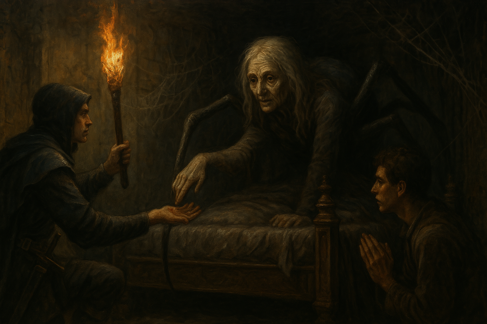

Chapter 2: Mother of Ruins
The Gift from Alfenor

The Gift from Alfenor
15048.12.02
看見四名夥伴啟程前往王宮，華生思索著在與貴族的晚宴前應該要先把握時間去哪裡。與 Dr. David 詢問後，他計劃先前往舊城區（貧民窟）一趟，據說那裡有不少瘋子，有可能從那裡問到一些和蜘蛛神教有關的線索。華生準備要出發，但 Sugalu 似乎身體不太舒服，因此無法陪同前往。
依照 Dr. David 給予的指示，華生走到了舊城區，一股濃濃的腐臭味撲鼻而來，但是路上一個人也沒有。華生走著，卻不小心被地上的凹洞絆到腳而面朝下的跌了下去。撐起身子，華生仔細研究了一下這個凹洞，卻發現它不過是地磚之間的縫隙被鈍器鑿開所產生的洞罷了。不過華生還是不太放心，於是靠到附近的牆邊坐了下來，用自己的老鼠鑽到洞內去探索。然而洞很淺，就連老鼠也一下就無法繼續鑽下去了。
華生得不到什麼線索，卻發現一邊的路口竟然有個人影探出頭來，似乎是在監視他。為了確認那人是不是能提供他線索的瘋子，華生快速地跑向那人，而那人也趕緊縮回路口，不見人影。跑到了路口，華生準備轉彎，迎接他的卻是拳頭，是剛才監視他的那名年輕男子。
華生試圖和男子交涉，表示自己想得到一些資訊，且願意提供東西來交換。男子思索後，先告訴了華生在舊城區的規矩：一、不要做出太誇張可疑的動作，發生什麼事情都要盡可能裝作沒事；二、不要穿的太華麗，低調點，甚至弄髒點，才不會引人注目；三、和人盡量不要有任何正面的眼神接觸，看著地上最安全。雖然這些話聽起來有點可疑，華生還是選擇相信了。
「貧民窟的人只是窮，不是笨。」
貧民窟的年輕男子 Rashim
華生試著想問關於蜘蛛神的線索。一開始年輕男子不願多加透露，但是華生掏出了一根來自 Tweeter 身上的羽毛，表示這是很珍貴的羽毛，送給男子，於是男子便在他耳邊，提到自己知道有人可以給他更多他想要的資訊。華生想詢問更多，但男子表示不便透露太多，等等見到那個人，可以問他。華生接受了這個提議，便跟著男子穿梭在貧民窟的巷弄之內，短短五分鐘內，華生已經失去了方向感，但也繞到了一個他沒有想像過存在的小廣場，廣場對面，則是一座看起來漂亮卻破舊，佈滿蜘蛛絲的小神殿。男子表示其實蜘蛛神教在舊城區是很主流的信仰，自己雖然沒有信，但這個地方是大家都知道的。最後，男子提醒華生，要對那個人有禮貌，而華生也必須給那人吸一點血，做為找他詢問的代價。
推入了神殿的門口，裡面是全黑的。男子遞給了華生一個火把，自己也拿了一跟，點燃後，兩人便一同走入了漆黑的房間。擁有夜視的華生，發現房子內盡是破舊的傢俱，上面佈滿蜘蛛絲。男子接著走到了前方的門口，敲了敲門。華生聽見了門內傳來一陣嘶嘶聲，男子便推開了門，帶著華生走入。雖然拿著火把，華生也有夜視，但在華生的眼前，只能看到一座設計精緻漂亮，但十分破舊的床。華生看見男子跪了下來，對著眼前的床喊了聲「母親大人，我帶了個人過來」，便也模仿起來，跪了下來，向著前方的床喊了聲「母親大人」。華生聽見了床板上傳來了一陣輕微的敲打聲。
對著床，華生向母親大人詢問了關於自己身上詛咒的事，並將詛咒的印記秀給母親大人看。母親大人緩緩從後方向前移動，華生這才看到一張充滿皺著的年長女性臉孔，出現在黑暗之中，但表情難以解釋。華生也看見了從黑暗之中，伸出了一隻如觸手般的東西，緩緩地向他伸出，最終貼在了他的詛咒圖形上。接著，原本黑色的圖案發紅，像是紅腫一般，華生也感受到了燒灼感蔓延全身。隔了幾分鐘後，觸手慢慢伸了回去，華生似乎感覺到舒暢了許多。向母親大人感謝後，華生想詢問更多關於蜘蛛神教的問題，但母親大人沒有給予回應。最終，華生向母親大人道謝，並表示自己兩天內還會再回來，接著，他便聽見床板上微微的敲打聲，母親大人向後退，向華生說了一句「bring your friends」，最後消失在床板後漆黑的洞穴內，床上空空如也。
走出神殿外，華生和男子詢問，得知母親大人幫了貧民窟的人很多事，因此受到貧民窟堅定的支持。男子也表示，華生是他看見第一個前來求助，卻沒有被母親大人吸血的人，讓他感到非常驚訝。最後，男子請求華生不要將這件事讓任何貴族知道，以免貴族前來對母親大人不利。華生允諾後，在男子的帶領下走回來原本來的道路。華生向男子表示自己兩天內還會再回來，得知他的名字是 Rashim，並表示自己會帶其他東西過來給他作為感謝。Rashim 則告訴華生，如果沒有見到他，其他人也都知道母親大人，要給他的東西交給母親大人就好。於是華生便離開了舊城區，準備回 Dr. David 的診所了。
離開了王宮，Tweeter 決定帶頭，卻意外地朝著錯誤的方向前進。走了好一段時間，Inu 感覺不對，試著向衞兵詢問，卻被衛兵看不起，就連 Tweeter 詢問也沒成功。Inu 決定向反方向走，Paladin 也跟在後面，最後才是 Tweeter。因為無法溝通的關係，Tweeter 透過心靈感應，向 Paladin 確認走的方向，卻只讓他覺得 Paladin 和 Inu 可能在耍他。走了好一段時間，三人終於走到了來的入口，Tweeter 才發現一直都是自己走錯路了。
穿過漆黑的通道，三人重新回到了王宮花園，外頭天色已黑。Paladin 想起華生似乎和貴族約在這裡要去參加晚宴，因此提議找找看華生，卻發現沒有找到。Inu 決定回診所去，於是大家在 Inu 的帶領下，朝著診所走。
回到診所的華生，在門口似乎聽到了診所內傳出了 Sugalu 說著「屁股」、「癢」之類的關鍵字，覺得有點奇異，於是先敲了敲門，才進入診所，診所內，Dr. David 面色尷尬，而 Dennis 還在昏睡中，Sugalu 則裝作沒事一樣。華生在診間簡單休息後，清洗了衣物，準備出發前往貴族的晚宴，但 Sugalu 依然表示身體不適，因此不跟著華生一起去晚宴了。
日落時分，華生來到了王宮花園內，看見 Pamela 和 Bernard 在花園內散步，於是前往搭話。Bernard 對於 Sugalu 沒有出現感到可惜，在華生說明 Sugalu 身體不適後，Bernard 提議在晚宴後可以陪同化名露西亞小姐的華生回到 Dr. David 的診所，順便探望 Sugalu。接著 Pamela 便帶領兩位來到了他家的門口。
回到了診所，Inu 聽見了裡面傳來 Sugalu 大聲地叫喊「屁股！」的聲響，於是便推開了們，走了進去。然而，他看見 Sugalu 似乎是對著牆壁正在大叫，遠觀的 Dr. David 和顯然已經清醒的 Dennis 則露出困惑，甚至有點害怕的眼神，正在看著 Sugalu。下意識的，Inu 朝著 Sugalu 大喊的牆壁擲出火把，木製的牆壁便馬上延燒，但 Sugalu 似乎一點也不在乎，繼續對著牆壁咆哮。
眼看失火，Paladin 趕緊跑去外面的井口，卻發現自己根本沒有拿水桶，於是只好折回診所，向 Dr. David 詢問到倉庫有木桶可以裝水；Tweeter 試著用自己的手將火拍熄，卻沒有幫助；Dr. David 結結巴巴地表示要保護自己的弟弟，便趕緊帶著 Dennis 跑出門外；Inu 也表示要保護 Dennis，所以也跟著跑了出來。
一陣忙竄之後，Paladin 的水無法澆熄越燒越旺的火，但 Sugalu 還在對著牆壁大叫。Tweeter 說服了 Sugalu，如果他想要屁股，可以去找 Dr. David，他一定有他想要的屁股。被說服後，Sugalu 便悠悠地走了出去，去找 Dr. David。當所有人都走出看起來已經要沒救的診所後，Inu 朝著診所的牆壁打穿了一個洞，診所的天花板瞬間坍塌了下來，就像 Dr. David 的臉色一樣。火剩下不多了，Paladin 用最後裝的井水，把火滅完後，將水桶放回了原本應該要是倉庫的那個空間去。
聽著不斷喊著屁股的 Sugalu，Inu 實在看不下去，便將他電暈。接著，Inu 在 Sugalu 身上搜刮，卻沒找到任何金錢。好奇之下，Inu 也檢查了一下 Sugalu 的屁股，卻發現完全沒有異狀。
Dr. David 和 Dennis 眼看診所毀了，決定離開這個廢墟，但 Paladin 表示要告訴他們一個故事。Dr. David 表示，診所都毀了，至少也得請他和他弟弟吃頓飯吧，說什麼故事？於是 Paladin 便決定帶 Dr. David、Dennis，和其他冒險夥伴們一起用餐，地點則是 Dr. David 推薦的艾德蒙餐酒館。在各種嘗試與評估後，Tweeter 把暈倒的 Sugalu 扛了起來，一起帶到餐酒館去了。
來到餐廳門口，店員熱切地歡迎大家，Paladin 則不經意的露出了紫羅蘭的勳章，向店員表示希望可以來用餐。店員看見勳章後，熱情地將大家帶進餐廳，並安排了包廂，給 Paladin 爵士使用。
Paladin 為 Dr. David、Dennis 和自己個點了一份高檔的餐點，也給 Sugalu 外的每個人一杯啤酒，Tweeter 和 Inu 則決定取出自己的乾糧作為晚餐就好，Sugalu 則攤在椅子上。
在服務生準備餐點的同時，Paladin 向 Dr. David 和 Dennis 説了一則來自遙遠的東方，名叫「華王優劣」的故事，故事之精彩，在說完時，全餐廳的顧客，甚至是蜘蛛王都跑到包廂內拍手了（並沒有，不要瞎掰好嗎？）。不久後，有人敲了敲包廂的門，走進來的是餐酒館的老闆 Edmond。Edmond 向 Paladin 爵士問好，也簡單介紹了一下自己的餐酒館，接著在 Paladin 的要求下，也找來了這裡的店長 Lewis。Lewis 請服務生準備了高檔的酒水，給 Paladin 等人享用。
Pamela 推開門，帶領 Bernard 和華生走入了他的宅邸。大廳內已經坐了幾名貴族，大家輕鬆的閒聊著。華生坐下後，也輕鬆聽著大家的話題。不久後，Pamela 便回到大廳，邀請大家共進晚餐。保險起見，華生將自己的老鼠留在大廳，以便隨時有特殊狀況，需要查看。
餐廳在房子的後方，燈光幽暗，氣氛十分不錯。長桌的短邊，坐著 Pamela，兩側則分別有四張椅子，讓今天來用餐的貴族們都有座位可以坐。華生和 Bernard 坐在最遠端的兩側。Pamela 敲了敲空酒杯，向大家介紹今天加入的新朋友，化名露西亞小姐的華生，華生則站了起來，和大家簡單的自我介紹，表示自己的家族是從事翡翠生意的。
接著，Pamela 的傭人們紛紛將酒水倒給賓客們，也陸續上了餐點。在華生的請求下，Pamela 將同桌的貴族們介紹給他認識。除了 Pamela 和 Bernard 外，另外還有做鑽石生意的 Yashin Usta、做毛皮生意的 Porter Lowe、做觀賞植物生意的 Wesley Vance、做奴隸生意的 Malcolm Hicks、做皮革生意的 Quinton Leonard，以及並沒有介紹做什麼生意的 Marcus Jens。用餐期間，華生偷偷打量這些貴族們，發現神秘的 Marcus 似乎朝他眨了一下眼。
用餐完畢後，Pamela 再次站起身，向大家宣佈今天最重要的事：是時候表態自己是否支持國王了。Pamela 表示，等等會讓大家閉上雙眼，舉手表示：若支持國王，舉起右手；反對國王，則舉起左手。晚宴後，大家則可以分道揚鑣。華生打斷，表示大家應該要互相分享各自對國王的資訊，以進行討論，得到對大家最有利的決策，但此時，Marcus 打斷了他，表示每個人都有自己不想揭露的消息，也都有各自的盤算。雖然這樣的決策可能會很有風險，但華生發現大家都沒有要反駁 Marcus 的意思，便放棄了。
在 Pamela 的引導下，大家閉上雙眼，並舉起了對應的手。華生決定支持國王，但其他人的決策，他不知道。等大家都睜開眼睛，Pamela 感謝大家，並表示不送客了，大家紛紛離席。Bernard 等待著華生一同離開，但華生表示自己要借用一下廁所。匆匆跑向廁所後，華生將視線切換回到大廳的老鼠身上，看見賓客們紛紛向外走離，路上也沒有人說話，也沒能看出誰和誰特別親近。但是老鼠看見了 Marcus，對著躲在櫃子上方的牠，揮了揮手，露出了意味深長的微笑。
離開了 Pamela 的宅邸，華生和 Bernard 一同前往 Dr. David 的診所。一路上，華生感覺有個身影一直在附近，卻又無法清楚感受到是誰或是什麼。Bernard 也都沒有反應。花了些時間，兩人終於來到了診所，卻只看見被火燒過的廢墟。在和附近居民詢問後，他們猜測夥伴們和 Dr. David 應該是到了 Edmond’s Diner 用餐去了。
Sugalu 逐漸甦醒，看見自己坐在餐廳的桌邊，Paladin 正滔滔不絕地在說著些什麼。看見 Sugalu 清醒後，Dr. David 趕緊詢問他的狀況，也告訴他剛剛他一直神智不清，不斷喊著屁股。Sugalu 狀況暫時沒事，也了解了剛剛發生的各種事。接著，Dr. David 和冒險者們談判，最終達成了共識——在一個月內生出 100 金幣，作為診所毀壞的賠償。
不久後，華生和 Bernard 來到包廂外了。見到了 Sugalu，Bernard 又變得支支吾吾。Bernard 試著關心 Sugalu，Sugalu 念頭一轉，便想透過 Bernard 對自己的好感，敲詐 100 枚金幣，但 Bernard 沒有辦法給他。Bernard 邀請 Sugalu 和他去喝一杯，在協商下，其他冒險者們也一同跟上了。
Bernard 先帶大家到了他家去。Norm 家的宅邸藏在巷弄中，雖然看得出比一般居民好上不少，但也很明顯的十分陳舊。依 Bernard 的說法，原本四名傭人，現在只剩下兩名，專門留下來照顧他的母親。
進到 Bernard 家，冒險者們透過 Tweeter 的心靈感應，討論著是否要藉機打劫，Sugalu 強硬的要大家今晚就行動，否則他就殺了 Bernard。同時，Bernard 邀請大家來到二樓的客房，並邀 Sugalu 一起到三樓，見見他的母親。
三樓只有兩個房間，小的房間是給傭人住的，大的房間，則是 Bernard 母親的臥房。輕輕推開，臥房內一片黑暗，只有兩名傭人手上的蠟燭發著光。Bernard 緩緩走到房間的臥床前，跪了下來，向他的母親大人請安，Sugalu 也照做。Sugalu 看見，在「母親大人」前，Bernard 似乎感到非常畏懼。對於這個奇異的景象，Sugalu 默默觀察。在兩人離開房間後，Bernard 的神情依然沒有回到原本和 Sugalu 相處時的羞澀感。
其他冒險者們紛紛在客房內討論著今晚是否要有所行動，同時華生也和大家分享他在舊城區看見的「母親大人」。透過 Tweeter 的心靈感應，他們發現 Sugalu 也在三樓見到了一位這樣的「母親大人」，而且和華生見到的「母親大人」幾乎沒有差異。
不久後，Bernard 便帶著 Sugalu 到附近的酒館喝酒。其他冒險者們疑似聽見了從三樓傳來的敲打聲，擔心自己在客房的行跡會被監視，於是華生和 Inu 決定到外頭走走。
幾杯下肚後，Sugalu 試圖從 Bernard 那裡套些話，Bernard 卻自顧自地喝酒，都不說話，於是 Sugalu 決定先離開，往 Bernard 家回去。
回到 Bernard 家的 Inu，因為自己身上的蜘蛛詛咒似乎加劇了，想盡快找母親大人求助，因此在華生強烈反對的狀況下，還是上了三樓，不過 Tweeter 也一起陪同著。兩人來到了大臥室，推開門後，跪在床前，試著和母親大人溝通。母親大人從遠處伸出他的觸手，碰向 Inu，低聲唸到「You are not of this world.」，隨即 Inu 昏了過去。Tweeter 見狀，想要阻止母親大人，自己卻也昏了過去。
Sugalu 回來後，華生告訴他 Inu 和 Tweeter 上樓已久，都沒有回來，於是三人備好武器一同上樓。先推開傭人房，兩名傭人正昏睡在床上，而且身形乾枯，感覺非常不健康，但沒有被魔法控制的跡象。來到母親大人的臥房，床上沒有躺臥的身形，但床的左側天花板懸掛了一個巨型的繭。
Sugalu 試著用武器將繭打下，但因為高度太高，沒辦法直接打下。由於不知道繭內有什麼，Sugalu 盡可能小心翼翼的用武器切開繭，卻還是傷到了在裡頭昏迷的 Tweeter。花了好長一段時間，Tweeter 終於掉出繭外，但身上裹著一層米白、褐色的液體，Tweeter 完全無法動彈，冒險者也無從判斷他的生死，但他們確定在房間內沒有找到 Inu。同時，他們也發現在母親大人的床頭有個漆黑的洞，動口旁有個疑似地標的圖案。華生將老鼠放了進去，卻發現馬上失去對老鼠的控制。
冒險者們感覺很不對勁，不知道他們面對的母親大人究竟是什麼，於是決定收拾行囊，先離開這個是非之地。然而，推開房門，華生看見了一具屍體躺在門口，是這家的主人，Bernard。他的身體像是被吸乾般的毫無血色。柵欄外的那人，是 Pamela 和一群舉著火把的暴民。華生試著和 Pamela 溝通，卻得不到有用的資訊，暴民們大喊著「異教徒」，邊衝進柵欄內，將火把丟向 Bernard 的房子。華生抱起 Bernard，與扛著 Tweeter 的 Sugalu 以及 Paladin 趁機逃走。
冒險者們逃到了 Sugalu 剛才去的酒館，Dark Side。小心潛入後，沒有得到多少有用的消息，也沒有檢測到任何魔法殘留。冒險者們考慮往貧民窟移動。
15048.12.03
過了午夜，Paladin 想起了過去曾在貧民窟住過的旅店 The Gates Inn，於是大家便朝著 The Gates Inn 的方向前進，而他們身後，一個神秘的身影悄悄跟隨。
在 The Gates Inn 門口前，Tweeter 的脖子被身後一名陌生人用匕首架住了。陌生人質問冒險者們為什麼來到舊城區？行蹤詭異，還扛著兩個屍體，從未出現在舊城區的生面孔，在午夜時分偷雞摸狗的走著，讓他感到警戒。冒險者說明來意，表示只是要入住旅店，但同時也掏出武器，對著陌生人威脅，最終陌生人不僅沒有恫嚇到冒險者們，還為了賠罪，決定幫他們付旅店的錢。
來到 The Gates Inn，老闆 Kevin 意興闌珊的和大家打招呼，同時冒險者們也得知這名先前襲擊他們的陌生人名為伊，是住在貧民窟的年輕人。Kevin 為冒險者們準備了一間二樓的大通鋪，眾人便到樓上準備休息。
冒險者們同步了兩邊活動的狀況，Paladin 也將 Tweeter 暫時收在背包內的貓頭鷹 Oliver 的屍體取出。大家也將 Tweeter 先擺在牆角，讓只能以視覺感知的他至少可以看到大家。大家討論著隔日要透過華生的能力，從 Oliver 口中搜集點情報，另外也要去貧民窟內母親大人的寺廟，最後再去拜訪 Pamela。
睡前，伊下了樓，想和 Kevin 說一下，請他幫大家準備早餐，但他發現 Kevin 已經睡著了，於是只好寫了張紙條壓在櫃台上。